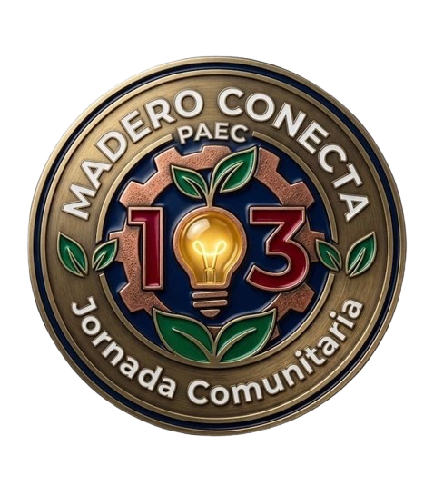

01 / AMBIENTE
DETERIORO AMBIENTAL
Deterioro ambiental y de equipos electrodomésticos por la alta salinidad costera.
CBTIS 103 · JORNADA COMUNITARIA
Jornada Comunitaria del CBTis 103 para compartir soluciones ecológicas, asistencia técnica y conocimiento al servicio de la comunidad.
⌖ Ciudad Madero, Tamaulipas
Explorar soluciones ecológicas →
CONOCIMIENTO QUE SE COMPARTE
El proyecto CONECTA 103 es una iniciativa de intervención transversal que vincula las especialidades técnicas y las asignaturas del tronco común del plantel con el entorno comunitario. Su objetivo central es brindar asistencia técnica, ambiental, tecnológica, económica y de bienestar social gratuita a los vecinos de la Colonia Estadio y zonas aledañas, mediante una Jornada Comunitaria.
01 / AMBIENTE
Deterioro ambiental y de equipos electrodomésticos por la alta salinidad costera.

02 / TECNOLOGÍA
Vulnerabilidad ante fraudes cibernéticos, especialmente en adultos mayores.

03 / ECONOMÍA
Necesidad de organización y fortalecimiento de micro-negocios locales.
CUIDADO RESPONSABLE DE LAS PLANTAS
Preparados de uso educativo para el manejo responsable de plagas comunes en las plantas.

El ajo actúa como un repelente natural gracias a sus compuestos sulfurados, mientras que el jabón potásico ayuda a controlar insectos blandos.
Prueba primero en una pequeña parte de la planta y observa si presenta daños antes de usar de forma más amplia. Evita el sol directo y sigue orientación especializada.

Las mezclas jabonosas pueden afectar a algunos insectos por contacto; su uso debe ser cuidadoso para evitar daños en las hojas.
No rocíes toda la planta sin una prueba previa. Consulta una fuente especializada para confirmar que los ingredientes y la concentración sean adecuados para esa especie.

Las cáscaras de plátano contienen minerales, aunque su composición varía y no sustituyen un fertilizante formulado según las necesidades del suelo.
Utiliza con prudencia y evita almacenar líquidos orgánicos durante periodos prolongados.

Aprovecha residuos orgánicos de la cocina para apoyar el cuidado del suelo mediante prácticas de compostaje.
Evita añadir grandes cantidades directamente al sustrato; el compostaje ayuda a aprovechar mejor los residuos.
CONOCE NUESTRAS SOLUCIONES
Explora nuestro catálogo interactivo de soluciones ecológicas.
ESCUCHAR · OBSERVAR · ACTUAR
Observación e indagación del entorno comunitario.
El Comité del PAEC del CBTis No. 103 llevó a cabo un proceso participativo de observación e indagación directa en el entorno que rodea al plantel, focalizando la atención en la Colonia Estadio y el espacio público de la Plaza Jalisco en Ciudad Madero, Tamaulipas.

La comunidad identificó fallas frecuentes en aparatos electrodomésticos, herramientas y equipos electrónicos debido al ambiente salino de la zona costera.

Un sector importante de adultos mayores enfrenta dificultades para realizar trámites en línea y protegerse contra el phishing y los ciberfraudes.

Pequeños comerciantes y emprendedores requieren herramientas para calcular costos, organizar presupuestos y difundir sus productos o servicios.
01 / IDENTIDAD
02 / PROPÓSITO
Organizar e implementar una jornada comunitaria interdisciplinaria de asistencia técnica, sustentabilidad y orientación financiera mediante la participación activa del estudiantado del CBTis 103, con el propósito de mitigar los efectos del deterioro salino en equipos, disminuir la brecha digital en adultos mayores y fortalecer los emprendimientos de la Colonia Estadio y alrededores, consolidando la transversalidad del MCCEMS y el compromiso social del plantel.
03 / IMPORTANCIA
El diagnóstico colectivo evidenció que las condiciones climáticas de la zona costera generan altos costos económicos en los hogares por fallas prematuras en electrodomésticos e infraestructura. A la par, el crecimiento acelerado de los trámites en línea ha dejado en desventaja socio-digital a los adultos mayores de la zona, exponiéndolos a estafas. Adicionalmente, los pequeños comercios carecen de metodologías para fijar precios reales y proyectar la logística de sus ventas.
CONECTA 103 justifica su intervención al transformar el conocimiento teórico de las aulas en soluciones tangibles que impulsan el bienestar social, la justicia comunitaria y el cuidado del medio ambiente, poniendo al estudiante al centro del aprendizaje experiencial.